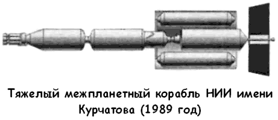
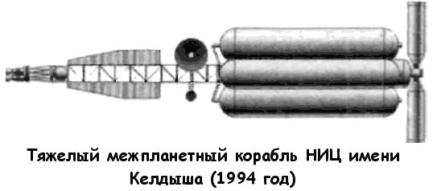

Проект марсианской экспедиции Центра имени Келдыша
На основе созданной в 80-е годы ядерной двигательной установки «РД-0410» (более подробно о ней мы говорили в главе 19) было разработано два варианта тяжелого межпланетного корабля.
Первый из них, предложенный конструкторами НИИ имени Курчатова в 1989 году, предусматривал такую компоновку корабля, при которой баки с жидким водородом должны были окружать жилой модуль, защищая экипаж от радиоактивного излучения реактора и космических лучей; при этом радиаторы ЯРД располагались в носовой части корабля.

Второй, более детальный, проект был разработан в 1994 году в Исследовательском центре имени Мстислава Келдыша. Радиаторы ЯРД теперь размещались перед двигателями, а жилой модуль в окружении топливных баков в сборе с двумя посадочными аппаратами стыковался в носовой части.

В этой компоновке корабль состоял из следующих элементов (от носа к хвосту): экспедиционный аппарат ЭА знакомой цилиндрической формы с коническим носом (длина — 13 метров, диаметр — 3,8 метра), такой же возвращаемый аппарат для спуска на Землю, жилой модуль типа «Мир» (длина — 33 метра, диаметр — 5,5 метра), шесть длинных баков для хранения жидкого водорода (длина — 36,5 метра, диаметр — 6 метра), соединительный лонжерон, идущий от кабины экипажа к ЯРУ с антенной дальней связи (длина — 18 метров, ширина — 3 метра), секция ЯРУ с четырьмя ядерными двигателями (длина — 11,5 метра).
Общие габариты корабля: длина — 84 метра, максимальный диаметр — 18 метров, общая масса корабля — 800 тонн, полезная нагрузка — 400 тонн. Параметры двигателя: тяга — 80 тонн, скорость истечения — 930 м/с, топливо — жидкий водород.
Экспедиция на красную планету для экипажа из пяти человек с использованием этого корабля должна была продлиться около 460 дней.
Разумеется, со временем и этот проект претерпел значительные изменения. В рамках кооперации по подготовке пилотируемой марсианской экспедиции конструкторы НИЦ имени Келдыша пересмотрели свои планы.
В новой версии проекта к Марсу планируется отправить два корабля — грузовой и пилотируемый. Каждый из них будет собираться на околоземной орбите из отдельных модулей, изготовленных в России, США и других странах. Масса пилотируемого корабля составит 585 тонн, «грузовика» — 143 тонны. Для запуска модулей предполагается использовать ракету «Энергия-М» или перспективный носитель «Ангара». Пригоден для ЭТИХ целей и французский носитель типа «Ариан-5».
Сборка пятимодульного «грузовика» займет от трех до четырех месяцев. Он доставит на марсианскую орбиту два ЭА для посадки на красную планету и взлета с нее. За ним «двинется» пилотируемый корабль.
Главное опасение конструкторов НИЦ имени Келдыша вызывает не столько невесомость, сколько длительное радиационное облучение. Поскольку доказано, что радиация оказывает наиболее сильное негативное воздействие на молодой организм, первый экипаж будет отбираться из космонавтов, достигших 40-летнего возраста. Кроме того, в жилом модуле предусмотрено специальное «радиационное убежище», куда экипаж будет отправляться в период «солнечных бурь».
Чтобы быстрее пройти опасные радиационные пояса, скорость пилотируемого корабля при старте с околоземной орбиты (используются жидкостные ракетные двигатели) будет намного выше, чем у грузового. И полет до красной планеты займет не 15 месяцев, а всего-то полгода с небольшим — 190 суток.
Самый ответственный этап начнется после того, как оба корабля выйдут на запланированные марсианские орбиты.
Пилотируемый будет совершать облет планеты на высоте от 1000 до 20 000 километров, «грузовик» окажется существенно ниже — на расстоянии всего 400 километров до поверхности.
Далее экипажу предстоит разделиться. Командир экспедиции, бортинженер и врач останутся в межпланетном корабле, а пилот и двое ученых, заняв места в «космическом такси», отправятся на грузовой корабль. Для них он станет промежуточной остановкой. От «грузовика» вначале отстыкуется один экспедиционный аппарат, который в беспилотном режиме сядет в заданном районе Марса. Затем настанет кульминационный момент — во втором ЭА пилот и три члена экипажа совершат мягкую посадку в том же районе красной планеты.
Предполагается, что они проведут на Марсе чуть больше месяца, совершая близкие и дальние поездки на герметизируемом марсоходе в поисках воды и живых организмов. Через 34 дня трое космонавтов вернутся в одном из экспедиционных аппаратов в дежурящий на марсианской орбите корабль. Другой аппарат останется на поверхности планеты до следующей экспедиции.
Любопытно, что российские ученые уже определили возможные районы посадки на красной планете. Это находящиеся недалеко от экватора долины Тиу и Ганга, которые интересны тем, что здесь совсем недавно были выходы воды на поверхность, а также кратер Гусева на обратной стороне Марса.